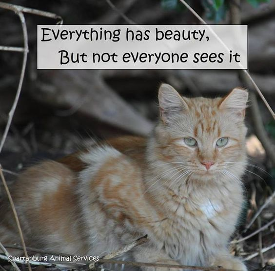
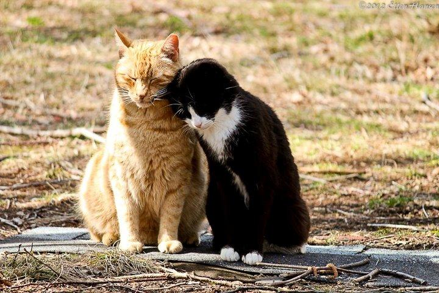
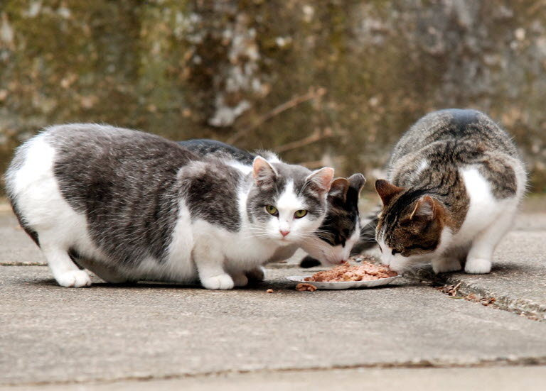
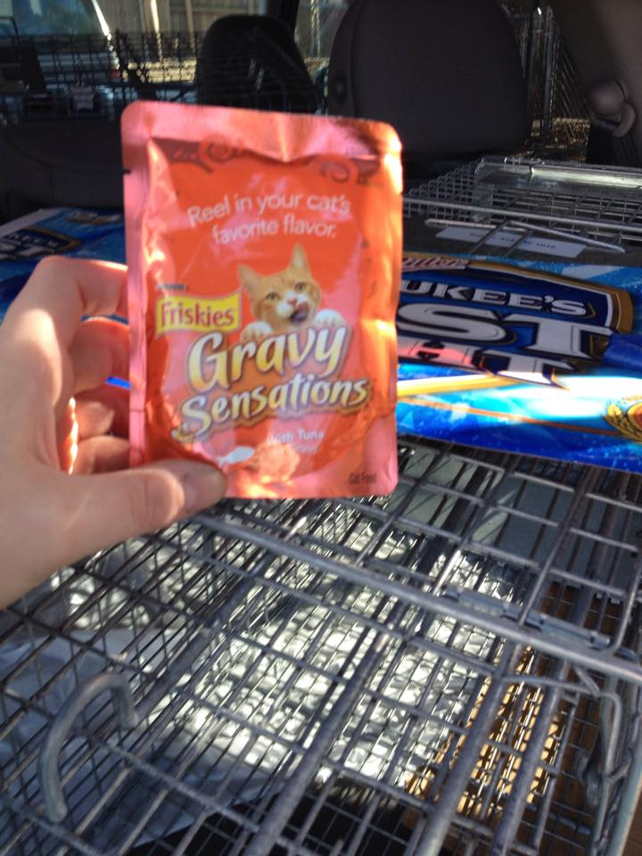
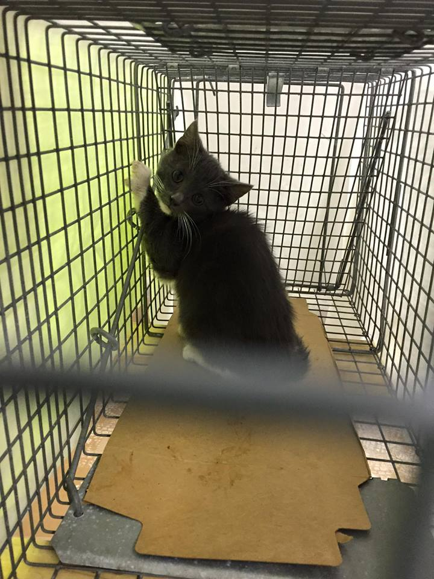
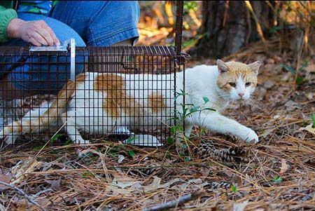
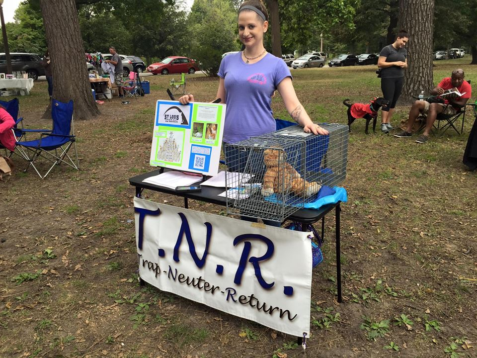

As a longtime animal shelter employee and volunteer, I wanted to be a part of the solution to reduce the population of homeless cats in St. Louis in a humane manner.
Some of my fellow volunteers told me about TNR (trap/neuter/return), and I was intrigued.
Here's how TNR works:
First, a colony (or family, if you will) of feral cats is identified, either through a Citizens' Service Bureau complaint, a Facebook message to our organization, or an e-mail from a concerned citizen. We volunteers go to the site and gather information about the cats, such as the number, where they like to hang out, and who is feeding them. The last part is usually the trickiest, as many people who feed the cats are not forthcoming to admit that they do this. Many have been threatened by neighbors, and some even believe they are doing something illegal by feeding them. The good news is that, in the City of St. Louis, the Board of Alderman passed an ordinance in support of TNR, which explicitly states that, while caring for a colony of feral cats has legally specified responsibilites, it is perfectly legal. You can read the full text of the ordinance here. Thank you Board of Alderman for being a part of something so progressive!
Next, we make veterinary appointments to get the colony cats spayed and neutered. We also plan our schedules accordingly for the trapping days ahead. It is best to trap wtih a buddy or two. This way, you have an extra set of eyes in the field, and an extra vehicle to transport the cats to and from the vet. We also post doorhangers on the block where we will be trapping, to let neighbors know what's going on, and to give them our contact info, in case they have more information about the cats.
Two days before trapping: we give those who feed the cats a call to remind them NOT to feed the day we will be trapping. The cats need to be hungry to go in the food-baited traps!
One day before trapping: we get all of our gear together, including traps, bait, flashlights, snacks, and anything else we might need.
Trapping day! We bait traps with a small amount of cat food (the stinkier, the better), and wait nearby for the traps to go off.

Once a cat is caught, we cover the trap with a sheet or towel to keep the cat calm. We then bring the cat to one of our vehicles, so the other cats don't get spooked by one of their friends stuck in a trap. When we are finished trapping for the day, we transport the cats to our holding location, give them food and water, and generally assess them.
The next day, cats are transported to and from the vet for their surgery. Most cats recover quickly from spay or neuter surgery, but we wait at least 24 hours before returning the cats to their home turf to make sure everyone is OK.
Once we've determined that the cats are recovering nicely, we transport the cats back to where we found them. We open the back doors of the traps, and watch them take their freedom runs.
The cats will live out the rest of their lives in their home territory. They will provide pest population control, and prevent other (unspayed and unneutered!) cats from moving into the territory. However, the cats will no longer be breeding litter after litter, which means that less cats will end up in shelters, or wandering the streets and starving to death.
When we're not trapping, we are educating the community on TNR, feral cats, and animal welfare in general. Not a lot of people know much about TNR, so education is important!